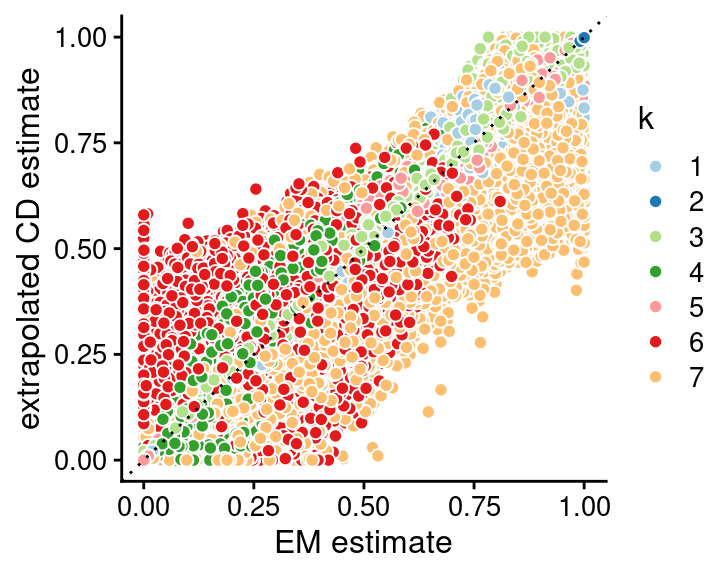
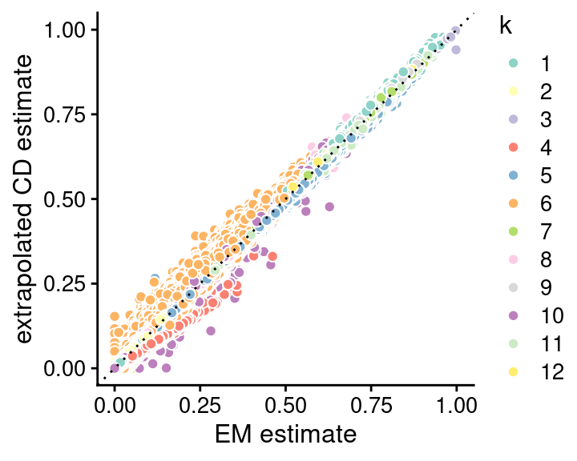
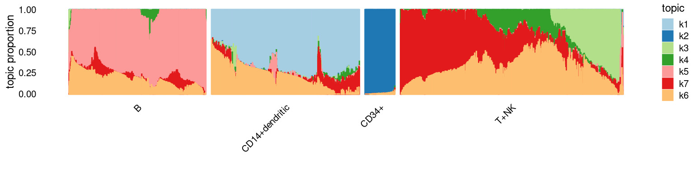
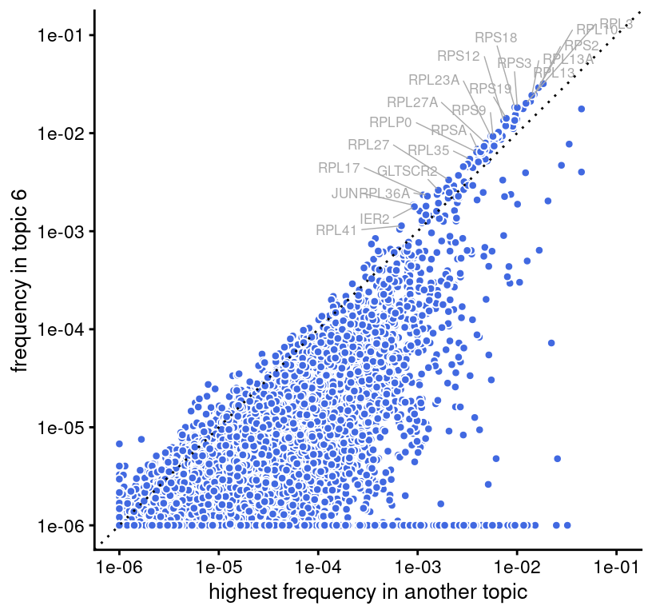

Assess topic model fits in 68k PBMC data
Peter Carbonetto
Last updated: 2021-04-20
Checks: 7 0
Knit directory: fastTopics-experiments/analysis/
This reproducible R Markdown analysis was created with workflowr (version 1.6.2.9000). The Checks tab describes the reproducibility checks that were applied when the results were created. The Past versions tab lists the development history.
Great! Since the R Markdown file has been committed to the Git repository, you know the exact version of the code that produced these results.
Great job! The global environment was empty. Objects defined in the global environment can affect the analysis in your R Markdown file in unknown ways. For reproduciblity it’s best to always run the code in an empty environment.
The command set.seed(1) was run prior to running the code in the R Markdown file. Setting a seed ensures that any results that rely on randomness, e.g. subsampling or permutations, are reproducible.
Great job! Recording the operating system, R version, and package versions is critical for reproducibility.
Nice! There were no cached chunks for this analysis, so you can be confident that you successfully produced the results during this run.
Great job! Using relative paths to the files within your workflowr project makes it easier to run your code on other machines.
Great! You are using Git for version control. Tracking code development and connecting the code version to the results is critical for reproducibility.
The results in this page were generated with repository version b63fb95. See the Past versions tab to see a history of the changes made to the R Markdown and HTML files.
Note that you need to be careful to ensure that all relevant files for the analysis have been committed to Git prior to generating the results (you can use wflow_publish or wflow_git_commit). workflowr only checks the R Markdown file, but you know if there are other scripts or data files that it depends on. Below is the status of the Git repository when the results were generated:
Ignored files:
Ignored: data/20news-bydate/
Ignored: data/droplet.RData
Ignored: data/nips_1-17.mat
Ignored: data/pbmc_68k.RData
Ignored: output/droplet/fits-droplet.RData
Ignored: output/newsgroups/fits-newsgroups.RData
Ignored: output/nips/fits-nips.RData
Ignored: output/pbmc68k/fits-pbmc68k.RData
Untracked files:
Untracked: plots/
Note that any generated files, e.g. HTML, png, CSS, etc., are not included in this status report because it is ok for generated content to have uncommitted changes.
These are the previous versions of the repository in which changes were made to the R Markdown (analysis/assess_fits_68k_pbmc.Rmd) and HTML (docs/assess_fits_68k_pbmc.html) files. If you’ve configured a remote Git repository (see ?wflow_git_remote), click on the hyperlinks in the table below to view the files as they were in that past version.
| File | Version | Author | Date | Message |
|---|---|---|---|---|
| Rmd | b63fb95 | Peter Carbonetto | 2021-04-20 | workflowr::wflow_publish(“assess_fits_68k_pbmc.Rmd”) |
| html | b099034 | Peter Carbonetto | 2021-04-15 | Build site. |
| Rmd | 7d6db59 | Peter Carbonetto | 2021-04-15 | workflowr::wflow_publish(“assess_fits_68k_pbmc.Rmd”) |
| html | 5311f12 | Peter Carbonetto | 2021-04-15 | Added gene scatterplot to assess_fits_68k_pbmc analysis. |
| Rmd | 3aa9fe7 | Peter Carbonetto | 2021-04-15 | workflowr::wflow_publish(“assess_fits_68k_pbmc.Rmd”) |
| html | f533b4a | Peter Carbonetto | 2021-04-13 | Added cluster sizes to assess_fits_68k_pbmc output. |
| Rmd | f03c042 | Peter Carbonetto | 2021-04-13 | workflowr::wflow_publish(“assess_fits_68k_pbmc.Rmd”) |
| html | 72ca1a7 | Peter Carbonetto | 2021-04-12 | Adjusted structure plot in assess_fits_68k_pbmc analysis. |
| Rmd | dbb1b30 | Peter Carbonetto | 2021-04-12 | workflowr::wflow_publish(“assess_fits_68k_pbmc.Rmd”) |
| html | 37c49e6 | Peter Carbonetto | 2021-04-12 | Added Structure plot to assess_fits_68k_pbmc analysis. |
| Rmd | 8d5661e | Peter Carbonetto | 2021-04-12 | workflowr::wflow_publish(“assess_fits_68k_pbmc.Rmd”) |
| Rmd | ed52e14 | Peter Carbonetto | 2021-04-11 | Working on structure plot for 68k pbmc data. |
| html | 50a3fca | Peter Carbonetto | 2021-04-10 | Added loadings scatterplots to assess_fits_68k_pbmc analysis. |
| Rmd | 809b3ad | Peter Carbonetto | 2021-04-10 | workflowr::wflow_publish(“assess_fits_68k_pbmc.Rmd”) |
| html | 279ad71 | Peter Carbonetto | 2021-04-07 | Built assess_fits_68k_pbmc analysis. |
| Rmd | 978a10d | Peter Carbonetto | 2021-04-07 | workflowr::wflow_publish(“assess_fits_68k_pbmc.Rmd”) |
Here we compare the quality of the fits obtained from the different updates (EM and SCD, with and without extrapolation), and with different numbers of topics, \(K\).
Load the packages used in the analysis below, as well as some additional functions for creating the plots.
library(Matrix)
library(fastTopics)
library(ggplot2)
library(cowplot)
library(ggrepel)
set.seed(1)Load the 68k PBMC data, and the results of running fit_poisson_nmf on the 68k PBMC data, with different algorithms, and for various settings of \(K\).
load("../data/pbmc_68k.RData")
load("../output/pbmc68k/fits-pbmc68k.RData")
fits <- lapply(fits,poisson2multinom)This plot shows the improvement in the log-likelihood as the rank, \(K\), is increased. The log-likelihoods are shown relative to the log-likelihood at \(K = 2\).
plot_loglik_vs_rank(fits) +
theme_cowplot(font_size = 12)
| Version | Author | Date |
|---|---|---|
| 279ad71 | Peter Carbonetto | 2021-04-07 |
The next set of plots shows the improvement in the fit over time, for \(K\) from 2 to 12, using EM or SCD, with and without extrapolation. The quality of the fit is measured by the log-likelihood relative to the best log-likelihood that was identified among all methods compared.
prune_prefit_iters <- function (fit) {
n <- nrow(fit$progress)
fit$progress <- fit$progress[1000:n,]
fit$progress <- transform(fit$progress,timing = timing/60^2)
return(fit)
}
create_progress_plot <- function (fits, k, y = "loglik")
plot_progress(fits,y = y,add.point.every = 100,shapes = 21,
colors = c("dodgerblue","red","dodgerblue","red"),
fills = c("dodgerblue","red","white","white")) +
scale_y_continuous(trans = "log10",breaks = 10^seq(-8,8)) +
guides(color = "none",fill = "none",size = "none",
shape = "none",linetype = "none") +
labs(x = "runtime (h)",title = paste("K =",k)) +
theme_cowplot(font_size = 10) +
theme(plot.title = element_text(size = 10,face = "plain"))
fits <- lapply(fits,prune_prefit_iters)
p <- vector("list",12)
for (i in 2:12)
p[[i]] <- create_progress_plot(fits[dat$k == i],i)
plot_grid(p[[2]],p[[3]],p[[4]],p[[5]],
p[[6]],p[[7]],p[[8]],p[[9]],
p[[10]],p[[11]],p[[12]],
nrow = 3,ncol = 4)
| Version | Author | Date |
|---|---|---|
| 279ad71 | Peter Carbonetto | 2021-04-07 |
These plots shows the evolution of the KKT residuals over time.
for (i in 2:12)
p[[i]] <- create_progress_plot(fits[dat$k == i],i,y = "res")
plot_grid(p[[2]],p[[3]],p[[4]],p[[5]],
p[[6]],p[[7]],p[[8]],p[[9]],
p[[10]],p[[11]],p[[12]],
nrow = 3,ncol = 4)
| Version | Author | Date |
|---|---|---|
| 279ad71 | Peter Carbonetto | 2021-04-07 |
An example in which the EM and (extrapolated) CD estimates greatly differ:
topic_colors <- c("#a6cee3","#1f78b4","#b2df8a","#33a02c",
"#fb9a99","#e31a1c","#fdbf6f")
fit1 <- fits[["fit-pbmc68k-em-k=7"]]
fit2 <- fits[["fit-pbmc68k-scd-ex-k=7"]]
n <- nrow(fit1$L)
pdat <- data.frame(x = as.vector(fit1$L),
y = as.vector(fit2$L),
k = factor(rep(1:7,each = n)))
pdat <- pdat[sample(7*n),]
p1 <- ggplot(pdat,aes(x = x,y = y,fill = k)) +
geom_point(color = "white",shape = 21,size = 2) +
scale_fill_manual(values = topic_colors) +
labs(x = "EM estimate",y = "extrapolated CD estimate") +
theme_cowplot(font_size = 12)
print(p1 + geom_abline(color = "black",linetype = "dotted"))
| Version | Author | Date |
|---|---|---|
| 50a3fca | Peter Carbonetto | 2021-04-10 |
An example in which the EM and (extrapolated) CD estimates largely agree:
topic_colors <- c("#8dd3c7","#ffffb3","#bebada","#fb8072","#80b1d3","#fdb462",
"#b3de69","#fccde5","#d9d9d9","#bc80bd","#ccebc5","#ffed6f")
fit1 <- fits[["fit-pbmc68k-em-k=12"]]
fit2 <- fits[["fit-pbmc68k-scd-ex-k=12"]]
n <- nrow(fit1$L)
pdat <- data.frame(x = as.vector(fit1$L),
y = as.vector(fit2$L),
k = factor(rep(1:12,each = n)))
pdat <- pdat[sample(12*n),]
p2 <- ggplot(pdat,aes(x = x,y = y,fill = k)) +
geom_point(color = "white",shape = 21,size = 2) +
scale_fill_manual(values = topic_colors) +
labs(x = "EM estimate",y = "extrapolated CD estimate") +
theme_cowplot(font_size = 12)
print(p2 + geom_abline(color = "black",linetype = "dotted"))
| Version | Author | Date |
|---|---|---|
| 50a3fca | Peter Carbonetto | 2021-04-10 |
From the PCs of the mixture proportions, we define four clusters, roughly corresponding to (1) B cells, (2) dendritic and CD14+ monocytes, (3) CD34+ cells, and (4) T cells and natural killer cells:
fit <- fits[["fit-pbmc68k-scd-ex-k=7"]]
pca <- prcomp(fit$L)$x
n <- nrow(pca)
x <- rep("T+NK",n)
pc4 <- pca[,4]
pc6 <- pca[,6]
x[pc4 > 0.25] <- "B"
x[pc4 < -0.25] <- "CD14+dendritic"
x[pc6 > 0.8] <- "CD34+"
clusters <- factor(x)
table(clusters)
# clusters
# B CD14+dendritic CD34+ T+NK
# 3733 4028 163 60655The Structure plot summarizes the topic proportions in the cells. Here we subsample the larger clusters in order to better visualize the rarer cell types.
set.seed(1)
topics <- c(1:5,7,6)
topic_colors <- c("#a6cee3","#1f78b4","#b2df8a","#33a02c",
"#fb9a99","#e31a1c","#fdbf6f")
rows <- sort(c(sample(which(clusters == "B"),746),
sample(which(clusters == "CD14+dendritic"),806),
which(clusters == "CD34+"),
sample(which(clusters == "T+NK"),1213)))
p3 <- structure_plot(select_loadings(fit,loadings = rows),
grouping = clusters[rows],topics = topics,
colors = topic_colors[topics],n = Inf,perplexity = 70,
gap = 30,num_threads = 4,verbose = FALSE)
print(p3) 
| Version | Author | Date |
|---|---|---|
| 72ca1a7 | Peter Carbonetto | 2021-04-12 |
Many of the “driving genes” in topic 6—that is, genes showing the largest increase in expression relative to other topics—are ribosomal protein genes:
pdat <- data.frame(gene = genes$symbol,
x = pmax(1e-6,apply(fit$F[,-6],1,max)),
y = pmax(1e-6,fit$F[,6]),
stringsAsFactors = FALSE)
pdat <- transform(pdat,fc = y/x)
pdat[with(pdat,!(fc > 1.6 & x > 0.0005)),"gene"] <- ""
p4 <- ggplot(pdat,aes(x = x,y = y,label = gene)) +
geom_point(color = "white",fill = "royalblue",shape = 21) +
geom_text_repel(color = "darkgray",size = 2.25,segment.color = "darkgray",
segment.size = 0.25,min.segment.length = 0,
max.overlaps = Inf) +
geom_abline(intercept = 0,slope = 1,color = "black",linetype = "dotted") +
scale_x_continuous(trans = "log10",limits=10^c(-6,-1),breaks=10^seq(-6,-1)) +
scale_y_continuous(trans = "log10",limits=10^c(-6,-1),breaks=10^seq(-6,-1)) +
labs(x = "highest frequency in another topic",
y = "frequency in topic 6") +
theme_cowplot(font_size = 10)
print(p4)
sessionInfo()
# R version 3.6.2 (2019-12-12)
# Platform: x86_64-apple-darwin15.6.0 (64-bit)
# Running under: macOS Catalina 10.15.7
#
# Matrix products: default
# BLAS: /Library/Frameworks/R.framework/Versions/3.6/Resources/lib/libRblas.0.dylib
# LAPACK: /Library/Frameworks/R.framework/Versions/3.6/Resources/lib/libRlapack.dylib
#
# locale:
# [1] en_US.UTF-8/en_US.UTF-8/en_US.UTF-8/C/en_US.UTF-8/en_US.UTF-8
#
# attached base packages:
# [1] stats graphics grDevices utils datasets methods base
#
# other attached packages:
# [1] ggrepel_0.9.0 cowplot_1.0.0 ggplot2_3.3.0 fastTopics_0.5-24
# [5] Matrix_1.3-3
#
# loaded via a namespace (and not attached):
# [1] Rcpp_1.0.5 invgamma_1.1 lattice_0.20-38
# [4] tidyr_1.0.0 prettyunits_1.1.1 assertthat_0.2.1
# [7] zeallot_0.1.0 rprojroot_1.3-2 digest_0.6.23
# [10] truncnorm_1.0-8 R6_2.4.1 backports_1.1.5
# [13] MatrixModels_0.4-1 evaluate_0.14 coda_0.19-3
# [16] httr_1.4.2 pillar_1.4.3 progress_1.2.2
# [19] rlang_0.4.5 lazyeval_0.2.2 data.table_1.12.8
# [22] irlba_2.3.3 SparseM_1.78 whisker_0.4
# [25] rmarkdown_2.3 labeling_0.3 Rtsne_0.15
# [28] stringr_1.4.0 htmlwidgets_1.5.1 munsell_0.5.0
# [31] mixsqp_0.3-44 compiler_3.6.2 httpuv_1.5.2
# [34] xfun_0.11 pkgconfig_2.0.3 SQUAREM_2017.10-1
# [37] mcmc_0.9-6 htmltools_0.4.0 tidyselect_0.2.5
# [40] tibble_2.1.3 workflowr_1.6.2.9000 quadprog_1.5-8
# [43] viridisLite_0.3.0 withr_2.1.2 crayon_1.3.4
# [46] dplyr_0.8.3 later_1.0.0 MASS_7.3-51.4
# [49] grid_3.6.2 jsonlite_1.6 gtable_0.3.0
# [52] lifecycle_0.1.0 git2r_0.26.1 magrittr_1.5
# [55] scales_1.1.0 RcppParallel_4.4.2 stringi_1.4.3
# [58] farver_2.0.1 fs_1.3.1 promises_1.1.0
# [61] vctrs_0.2.1 tools_3.6.2 glue_1.3.1
# [64] purrr_0.3.3 hms_0.5.2 yaml_2.2.0
# [67] colorspace_1.4-1 ashr_2.2-51 plotly_4.9.2
# [70] knitr_1.26 quantreg_5.54 MCMCpack_1.4-5